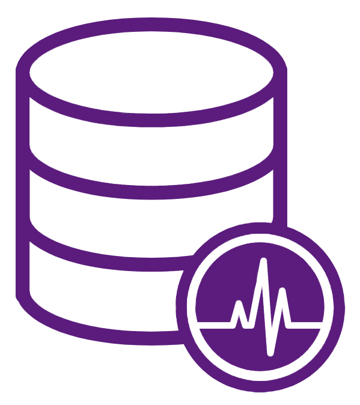

        <!-- start service detail section -->
<section>
  <div class="container">
    <div class="row">

      <!-- start left side section -->
      <div class="col-lg-4 col-md-12 padding-50px-right md-padding-30px-right sm-padding-15px-right order-2 order-lg-1">

        <!-- start help -->
        <div class="bg-img cover-background theme-overlay border-radius-5">
          
        </div>
        <!-- end help -->
        <!-- start services -->
        <div class="services-single-left-box">
          <h6 class="font-weight-700 font-size16 sm-font-size14 text-uppercase left-title margin-20px-bottom">All Modules</h6>
          <div class="services-single-menu bg-light-gray margin-30px-bottom sm-margin-25px-bottom">
            <ul class="no-margin">
              <li><a routerLink="/modules/database-maintenance">Database Maintenance</a></li>
              <li class="active"><a routerLink="/modules/performance-logging">Performance Logging</a></li>
              <li><a routerLink="/modules/system-analysis">System Analysis</a></li>
              <li><a routerLink="/modules/schedular">Schedular</a></li>
            </ul>
          </div>
        </div>
        <!-- end services -->

      </div>
      <!-- end left side section -->
      <!-- start right side section -->
      <div class="col-lg-8 col-md-12 order-1 order-lg-2 sm-margin-30px-bottom">
        <div class="services-single-right">
          <h5 class="font-weight-600">Performance Logging</h5>
          <p class="width-95">
            SQL Mantra Tools Performance Logging module will record performance related KPIs 24/7 automatically and will work as a “black box”
            providing vital inside information for a performance incident. It will also monitor key services and will alert lack of heartbeat. This makes
            the performance logging module the heart of a busy multiuser system. With the analysis module the logging module would play a
            major role in providing invaluable inside information for performance tuning and troubleshooting and will lead to extending systems
            life and it’s scalability
          </p>

          <div class="margin-40px-bottom sm-margin-30px-bottom float-left width-100">
            
            
          </div>

          <div class="clearfix"></div>

          <div class="row margin-40px-bottom sm-margin-30px-bottom">

            <div class="col-12">

              <div class="inner-title">
                <h5 class="font-weight-600">
                  The following key performance KPI’s are logged:
                </h5>
              </div>
              <ul class="list-style-16">
                <li class="success">Blocking*</li>
                <li class="success">Deadlocks*</li>
                <li class="success">Slow Queries</li>
                <li class="success">Index Usage</li>
                <li class="success">Disk Response</li>
                <li  class="success">CPU Usage</li>
                <li  class="success">Service Monitor</li>
              </ul>
            </div>
          </div>

          <div class="inner-title half">
            <h5 class="font-weight-600">Note:
            </h5>
          </div>
          <p>
            * With an optional feature for Dynamics NAV and Business Central (versions NAV2013 to all BC versions) SQL Mantra Tool will capture the Dynamics NAV/BC user
            detail as well as the Dynamics NAV/BC Application code details involved in each of the performance incident in the logs making it possible
            to identify and tackle performance problems and bottlenecks with pin point accuracy.
          </p>

        </div>
        <!-- end right side section -->
      </div>
    </div>
  </div>
</section>
<!-- end service detail section -->
